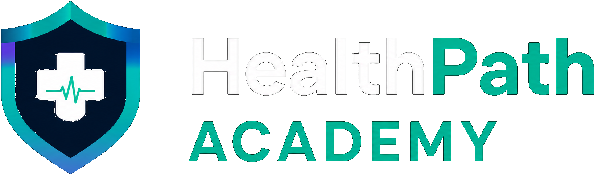

Opening HealthPath...
Let's keep that momentum going.
Let's keep that momentum going.

Start learning in under a minute — your progress saves automatically.
After you sign in, this browser's current progress will merge with your cloud progress.
Help us tailor your learning journey to your goals and interests.
You can select more than one.
We'll help you stay on track!
Patient-friendly wording for this lesson.